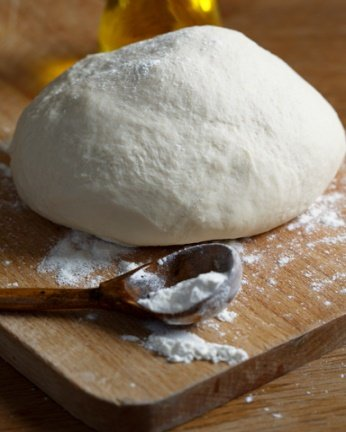

Couronne feuilletée tomate pesto
Ingredients
×
- 1 pâte feuilletée
- pesto
- 2 tomates
- courgette
- mozzarella
- origan
- 1 oeuf
- olives noires

Préparation
Étape 1
Dérouler 1 pâte feuilletée et la piquer. Poser un bol au centre et étaler du pesto autour, sans toucher le bol ni les bords.
Étape 2
Couper 2 tomates et de la courgette en tranches épaisses et les disposer en alternance. Ajouter des boules de mozzarella et saupoudrer d’origan.
Étape 3
Retirer le bol et inciser en étoile le centre. Rabattre les bords et les pointes de l’étoile sur la garniture.
Étape 4
Badigeonner la pâte de 1 oeuf battu et parsemer d’olives noires en rondelles. Cuire 20min à 180ºC.